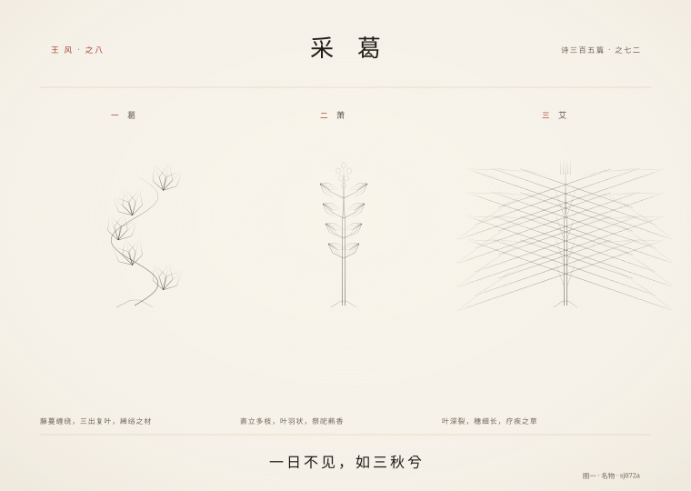
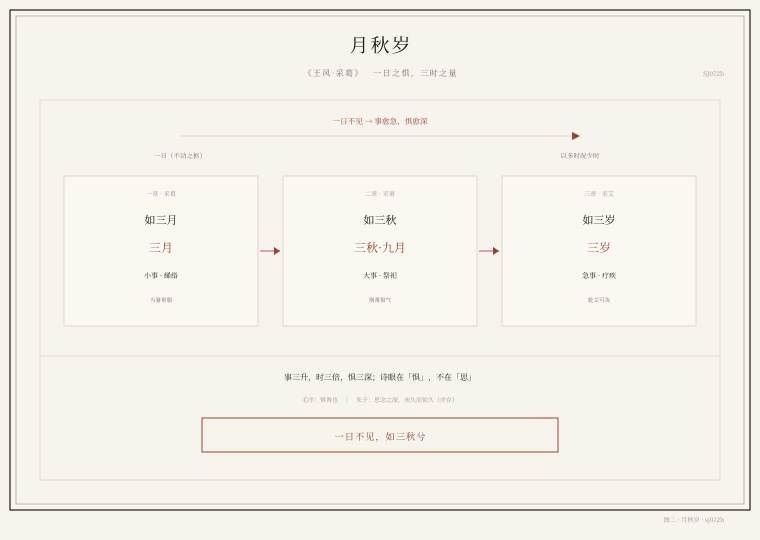

第七十二篇 采葛
王风 · 之八 SJ072
朗读 · 普通话
依经文原文朗读，章次不读出；配古琴底乐，不改速、不加拖腔。全库同一音色（豆包 TTS），非播音员录制。
一 解题
诗三判：
- 谁在说：一个事君之臣。毛郑以为「臣无大小，使出者则为谗人所毁」，故惧；朱子以为「淫奔者托以行」，是思念之人。本库从毛郑。
- 说什么事：采葛、采萧、采艾，三事由缓而急；一日不见君，如三月、如三秋、如三岁。事愈急，则惧愈深。
- 为何编在此：王风第八。前一篇《葛藟》写宗族离散，此篇写朝廷谗毁；一在族，一在朝，皆平桓之世王政不明之征。
《毛序》：「《采葛》，惧谗也。」
郑笺（序下）：「桓王之时，政事不明，臣无大小，使出者则为谗人所毁，故惧之。」
毛传：「兴也。葛所以为絺绤也。事虽小，一日不见于君，忧惧于谗矣。」
郑笺：「兴者，以采葛喻臣以小事使出。」二章「彼采萧者，喻臣以大事使出」；三章「彼采艾者，喻臣以急事使出」。
朱子《诗集传》：「采葛所以为絺绤，盖淫奔者托以行也。故因以指其人，而言思念之深，未久而似久也。」
本库的看法：《采葛》是一首「惧谗」的诗。
三章以葛、萧、艾为事之三等——絺绤之常、祭祀之大、疗疾之急；以月、秋、岁为时之三量——三月、九月、三年。事愈急，则惧愈深；不是情愈深。
今人读作「一日三秋」的情语，是把「惧」换成了「思」。
先辨五物：葛是絺绤之材，不是野草；萧是祭祀爇香之蒿，不是萧索；艾是疗疾之草，不是艾安；三秋是九月，不是三年；采是「以事使出」之喻，不是采撷之实。
二 经文
第一章
彼采葛兮，一日不见，如三月兮。
第二章
彼采萧兮，一日不见，如三秋兮。
第三章
彼采艾兮，一日不见，如三岁兮。
分章：三章，章三句。
章末韵：一章葛、月（祭部）；二章萧、秋（幽部）；三章艾、岁（祭部）。
三 韵读
| 一 |
葛 / 月 |
祭部，入声与去声通押 |
| 二 |
萧 / 秋 |
幽部，平声 |
| 三 |
艾 / 岁 |
祭部，去声 |
《诗本音》：葛【七曷】、月【五屑】；萧【二萧】、秋【十八尤】；艾【五盖】、岁【八霁】。一章葛、月同部；三章艾、岁同部；二章萧、秋幽部相协。
孔疏：「积日成月，积月成时，积时成岁，欲先少而后多，故以月、秋、岁为次也。」又云：「年有四时，时皆三月，三秋谓九月也。设言三春三夏，其义亦同，作者取其韵耳。」三秋是九月，不是三年——此条最易误。
四 字义与名物
字义
- 彼——那个人；指采者，即「以使事出」之臣。不是「彼此」之彼。
- 采——采撷；在毛郑读法里是「以事使出」之喻，不是采撷之实。
- 一日——一日之暂；与三月、三秋、三岁对，是「以多时况少时」。
- 不见——不得见于君；不是「不见面」之泛言。
- 如——犹如、等于；不是「好像」。
名物
- 葛——多年生藤本，茎皮纤维可织絺绤。毛传「葛所以为絺绤」，是当暑之常服，故为「小事」。
- 絺绤（chī
xì）——细葛布曰絺，粗葛布曰绤；葛之用途在此。
- 萧——蒿类，茎叶有香气。毛传「萧所以共祭祀」；陆玑云「今人所谓荻蒿者是也，或云牛尾蒿，似白蒿，白叶茎粗，科生多者数十茎，可作烛，有香气，故祭祀以脂爇之为香」。许慎以为艾蒿，陆玑非之。祭祀为国之大事，故为「大事」。
- 艾——蒿属，可疗疾。毛传「艾所以疗疾」；疗疾急于祭祀，故为「急事」。
- 三秋——九月。一秋三月，三秋九个月；不是三年。
- 三岁——三年；与「三秋」别。
五 今译
第一章
那个人去采葛啊，一天不见他，就像过了三个月啊。
第二章
那个人去采萧啊，一天不见他，就像过了九个月啊。
第三章
那个人去采艾啊，一天不见他，就像过了三年啊。
说明：「彼」作「那个人」；「不见」作「不得见」；「三秋」作「九个月」，不作三年。若从朱子淫奔之说，则「不见」作「不得相见」，此译从毛郑。
六 章旨
一章：葛—小—月。
采葛为絺绤，是当暑常服，事之小者；事虽小，一日不见君，已惧如三月。
二章：萧—大—秋。
采萧供祭祀，是国之大事；事大则忧深，故如三秋。
三章：艾—急—岁。
采艾疗疾，是仓卒之急；事急则惧更甚，故如三岁。
三章合看：事三升，时三倍，惧三深。
葛、萧、艾，由常而大而急；月、秋、岁，由三而九而三十六。诗眼不在「思」，在「惧」：臣出使于外，一日不得见君，谗言即乘间而入；故以久远之时间，写迫近之危惧。
七 诗教
- 兴：毛传标「兴也」。葛、萧、艾三物各有其用，用各有其缓急，故兴三事之等；不是泛取草木起兴。郑笺逐章点出「小事」「大事」「急事」，兴义始明。
- 观：观桓王之世政事不明、谗伪并作；观人臣出使，一日不在君侧即惧谗毁。此非一人之忧，是朝廷之病。
- 群：可与「任事而惧谗」者同群。诗不言谗者是谁，只言「一日不见」之惧；惧在暗处，故不言。
- 怨：此诗无怨语，只有惧语。惧而不怨，是臣之分；然三章递进，惧至「如三岁」，则君之不明已在言外。不怨之怨，深于怨。
八 分寸与边界
- 不可把「三秋」当三年。三秋是九月。
- 不可把「葛」当野草。葛是絺绤之材。
- 不可把「萧」当萧索、萧条。萧是祭祀爇香之蒿。
- 不可把「艾」当艾安、安息。艾是疗疾之草。
- 不可把「采」只作采撷。毛郑以采喻「以使事出」。
- 不可把三章读成同一意思的三次重复。葛、萧、艾是三等事，月、秋、岁是三等时。
- 不可把此诗只读作情诗。「一日三秋」之情语由此诗出，但诗本义是惧谗。
- 不可把朱子「淫奔者托以行」当定论。朱子自有其读法，本库从毛郑，两存于存疑。
- 不可把「一日不见」坐实为「一天没见面」的日常语。此处「见」是「见于君」。
- 不可把「如三月」解作「三个月没见」。是「一日之别，其惧如三月之久」。
- 不可把此诗系于某一具体谗人。诗中无证。
- 不可以「惧谗」为由，教人揣摩上意、构陷同列。
- 不可把「三章递进」说成「情感递进」。是「事递进」，情随之。
- 不可把此诗与《子衿》混为一谈。彼言学校废，此言谗伪作；「一日不见，如三月兮」句同而义别。
九 存疑
- 诗旨：毛序「惧谗」；朱子「淫奔者托以行」。一归君臣，一归男女。本库从毛郑，朱说并存。
- 「萧」为何物：毛传「所以共祭祀」；陆玑以为荻蒿、牛尾蒿，非艾蒿；许慎以为艾蒿。本库从陆玑。
- 「三秋」之解：孔疏「三秋谓九月」；后世或解作「三年」之秋，或解作「三季」。本库从孔疏。
- 「艾」之用：毛传「疗疾」；或说艾可灸，亦可为祭祀之用。本库从毛传。
- 三章次第：孔疏以为「先少而后多」，取韵而成，非关事之大小。本库以为兼有二者：事有缓急，韵亦相从。
- 作者身份：出使之臣自作，或他人代为道之，诗中无证。
- 诗作年代：笺系桓王；皇甫谧以《兔爰》至《大车》四篇为桓王诗，此篇在其间。本库从笺大意。
- 编次：此篇在《葛藟》后、《大车》前，三篇皆桓王时事，次序无深意可求。
十 跨典
- 《王风·葛藟》：前一篇。彼写宗族离散，此写朝廷谗毁；一在族，一在朝。
- 《郑风·子衿》：「一日不见，如三月兮。」句同而义别：彼刺学校废，此言惧谗。
- 《小雅·巧言》：「乱之初生，僭始既涵。」谗言之起，正在「既涵」——君不察，则谗得入。与此篇「一日不见」之忧同一机理。
- 《论语·颜渊》：「浸润之谮，肤受之愬，不行焉，可谓明也已矣。」明则谗不行；此诗所惧，正是君不明。
- 《左传·成公十三年》：「国之大事，在祀与戎。」萧供祭祀，故为大事；郑笺以「大事」释之，本此。
- 《礼记·郊特牲》：「既奠，然后爇萧合馨香。」萧之用有据，非泛言香草。
十一 双卡与图
双卡十六对：
| 葛（絺绤之材） |
葛（野草，误） |
| 萧（祭祀爇香之蒿） |
萧（萧索，误） |
| 艾（疗疾之草） |
艾（艾安，误） |
| 三秋（九月） |
三秋（三年，误） |
| 三岁（三年） |
三岁（九月，误） |
| 采（以事使出之喻） |
采（采撷之实，窄解） |
| 见（见于君） |
见（见面，浅解） |
| 一日（一日之暂） |
一日（一整日，误） |
| 彼（采者，出使之臣） |
彼（彼方，误） |
| 惧（惧谗） |
思（思念，误） |
| 兴（三物兴三事） |
赋（直陈采撷，误） |
| 小事（絺绤之常） |
小事（无关紧要，误） |
| 大事（祭祀） |
大事（大事情，泛解） |
| 急事（疗疾） |
急事（着急之事，误） |
| 以多时况少时 |
以少时况多时（倒置，误） |
| 臣惧谗 |
女思男（朱子一说，非本义） |

图一 · 葛萧艾 三物三事，由常而急

图二 · 月秋岁 一日之惧，三时之量
读图三处：
- 三物：图一，葛为絺绤、萧供祭祀、艾疗疾；三物之用在衣、在祀、在病，即三事之缓急。
- 三时：图二，三月、九月、三年，三量递进；不是情感递进，是事递进。
- 一日：两图皆以「一日」为枢。一日之暂，量以三月、三秋、三岁——此诗全部的张力在此一字。